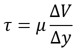
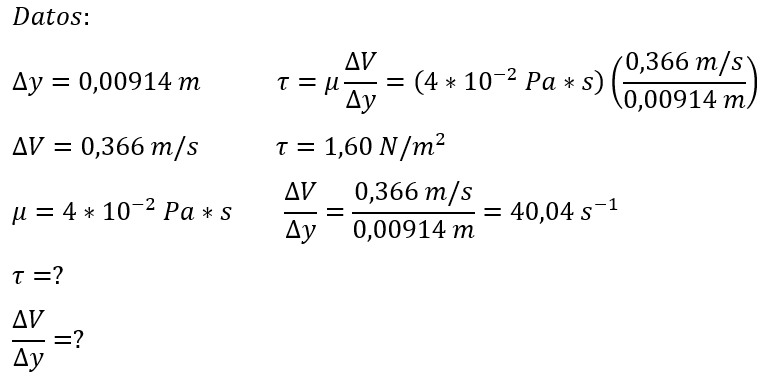

Tema 5: Viscosidad.
La viscosidad es la propiedad de un fluido que ofrece resistencia al movimiento relativo de sus moléculas. La pérdida de energía debido a la fricción que fluye se debe a su viscosidad.
Viscosidad dinámica
Cuando un fluido se mueve, se desarrolla una tensión de corte que depende de la viscosidad del fluido. La Tensión de corte, puede definirse como la fuerza requerida para deslizar una capa de área unitaria de una sustancia sobre otra capa de la misma sustancia. La magnitud de la tensión (τ) es directamente proporsional al cambio de velocidad entre distintas posiciones del fluido.

Ejemplo:
La distancia entre 2 placas paralelas es de 0.00914 m, la placa inferior se desplaza a una velocidad relativa de 0.366 m/s mayor que la superior y el fluido usado es un aceite de soya cuya viscosidad es de 4x10-2 Pa*s. Calcule el esfuerzo cortante y la velocidad de corte.

Respuesta: el esfuerzo cortante vale 1,60 N/m2 y la velocidad de corte es de 40,04 s-1.
Enlaces de Interés
- https://www.flottweg.com/es/wiki/tecnica-de-separacion/viscosidad-dinamica/
- https://es.slideshare.net/kevincanchi/ejercicios-deviscosidad
- https://amyd.quimica.unam.mx/pluginfile.php/2639/mod_resource/content/1/Capítulo%204.-%20La%20viscosidad.pdf